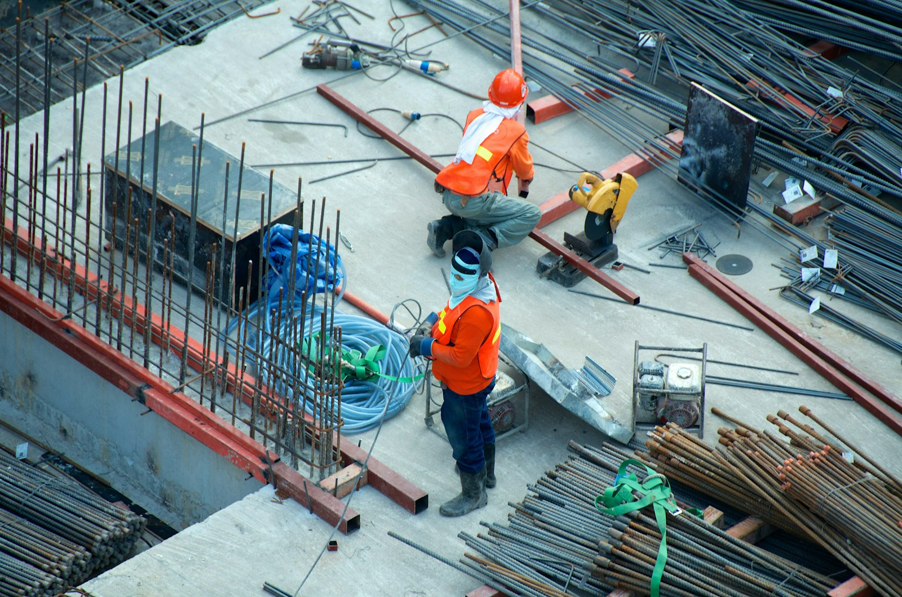

Construimos. Renovamos. Ampliamos.
Albañilería, herrería y ampliaciones en Puebla. Mano de obra calificada y una verdadera atención a los detalles — no importa qué tan grande o pequeño sea tu proyecto.
Consulta gratuita
Evaluamos tu proyecto en sitio, sin costo.
Zonas de cobertura
Puebla · San Martín · Cholula · Cuautlancingo.
El mismo cuidado
Proyectos grandes y pequeños, con el mismo rigor y atención al detalle.
Albañilería
Muros, bardas, cimentación y mantenimiento de estructuras existentes.
Herrería
Portones, barandales, protecciones y estructuras metálicas.
Ampliación de construcciones
Habitaciones extra, segundos pisos y techados.
Renovaciones
Remodelación integral de espacios interiores y fachadas.
Restauración
Recuperación de fachadas, humedad y grietas en muros.
Dirección de obras
Supervisión técnica, control de obra y calidad de insumos.


Tu proyecto aquí
Espacio reservado para próximos trabajos de Mantenimiento Gabe.
Cotizar →Consulta gratuita
Cuéntanos tu proyecto por teléfono o por el formulario.
Visita y medición
Vamos a tu casa o terreno, medimos y entendemos el alcance.
Cotización por escrito
Recibes tu cotización clara, por escrito, antes de decidir.
Obra y entrega
Ejecutamos con mano de obra calificada y atención a los detalles.
¿Tienes un proyecto en mente? Cuéntanos.
Escríbenos y agendamos tu visita. Cobertura en Puebla · San Martín · Cholula · Cuautlancingo.